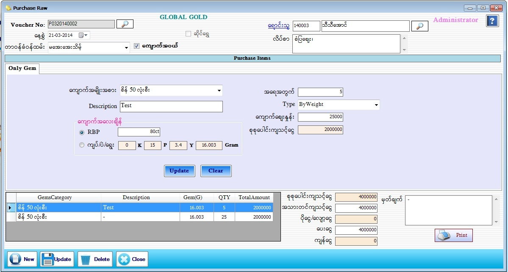

Purchase Raw For Gems Setup
PurchaseRaw
PurchaseRaw(GoldShop)
PurchaseRaw(Gems)

- Purchase Raw Material Item တွင် Purchase Gem အတွက်ဖြစ်ပါက Only Gem check box တွင် အမှန်ခြစ်ခြစ်ပေးပါက Only Gem Form ပေါ်လာပါလိမ့်မည်။
- Voucher No သည် software မှ Auto တပ်ပေးပါမည်။
- နေ့စွဲတွင် လက်ရှိရောက်နေသော Date ကိုပြပေးမည် ဖြစ်သည်။
- တာဝန်ခံ ဝန်ထမ်းကို ရွေးချယ်ပါ။ ရောင်းသူ၏ code နံပါတ်ကိုအလွတ်သိပါကရိုက်ထည့်လျှင် ရောင်းသူအမည်နှင့် လိပ်စာကျလာပါမည်။နံပါတ်ကိုအလွတ်မသိရှိပါကရောင်းသူဘေးတွင်ရှိသောမှန်ဘီ လူးကိုနှိပ်ပြီး ရွေးချယ်ရပါမည်။
- ကျောက်အမျိုးအစား၊ Description၊ အရေအတွက်၊ Type၊ ကျောက်ဈေးနှုန်း၊ စုစုပေါင်းကျသင့်ငွေ နှင့် ကျောက်အလေးချိန်တွင် RBP နှင့် ကျပ်၊ပဲ၊ရွေး ကြိုက်နှစ်သက်ရာရွေးချယ် ဖြည့်စွက်ပါ။ ထို့နောက် Add Buttonနှိပ်ပြီး Dataများဖြည့်သွင်းပေးရမည်။
- Add လုပ်ပြီးသား ပစ္စည်းတစ်ခုအားပြန်လည်ပြင်ဆင်လိုပါက အောက်မှ Grid မှ မိမိပြင်ဆင်လိုသော Row ၏ ရှေ့ဆုံးကိုနှိပ်ပါက သက်ဆိုင်ရာ Row ၏ Data များကို အပေါ်တွင်ပြန်လည် ပြင်ဆင်နိုင်မည် ဖြစ်သည်။ပြီးနောက် Update Button အားနှိပ်ပါ။
- အသားတင်ကျသင့်ငွေ၊ ပေးငွေ၊ မှတ်ချက် တွင် ဖြည့်စွက်ပါ။ စုစုပေါင်းကျသင့်ငွေ၊ ပိုငွေ-လျှော့ငွေ၊ ကျန်ငွေ တို့တွင် Software မှ Auto ကျပေးမည် ဖြစ်သည်။
- Data များဖြည့်စွက်ပြီးပါက Save Button ကိုနှိပ်၍ သိမ်းဆည်းနိုင်ပါသည်။ Purchase Invoice Voucher ထုတ်လိုလျှင် Print Button ကိုနှိပ်၍ Voucher ထုတ်နိုင်ပါသည်။
- သိမ်းဆည်းပြီးသား Data များအား ပြန်လည်ကြည့်ခြင်း၊ ပြင်ဆင်ခြင်းများပြုလုပ်ချင်ပါက Voucher No ၏ ဘေးတွင် ရှိသော မှန်ဘီလူး button ကိုနှိပ်ပြီးပြန်လည်ကြည့်ရှုပြင်ဆင်ချင်သော Purchase Item အား ရွေးချယ် ပြီးပြင်နိုင် ပါသည်။
- သိမ်းဆည်းပြီးသား ထည့်ပြီးသား Data များကို ဖျက်လိုလျှင် မှန်ဘီလူး button အားနှိပ်ပြီးရှာပါ။ ထို့နောက် မိမိဖျက်လိုသော Data ကို Delete Button ကိုနှိပ်၍ ဖျက်နိုင်ပါသည်။
- Purchase Item အသစ်ထည့်လိုပါက New Button ကိုနှိပ်ပြီး အသစ်ထည့်နိုင်ပါသည်။
- Purchase Raw Material Item Form အား အသုံးပြုပြီးပါက Close Button ကိုနှိပ်၍ ပိတ်နိုင်ပါသည်။